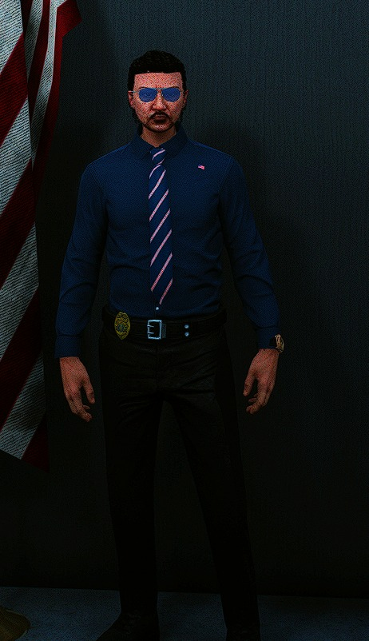
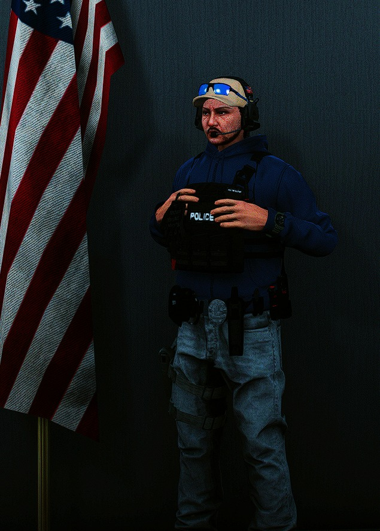

מדים וציוד - יחידת הדיטקטיב
מראה מקצועי • זהות ברורה • מוכנות מבצעית
מדי יחידה
מדים יצוגיים - חוקר ומשמרת
מדים יצוגיים, המורכבים מחולצה מכופתרת ועניבה (לא חובה חליפה).
שיער מסודר ולא פרוע. אקדח בצד עם תרתיק חגורה או כתף.
חובה: תג גלוי בכל עת.

מדי מחלקת וויס
אוזניות קשר, מדים אזרחיים, מכנס ג'ינס צמוד,
ווסט עם דיגום היחידה, חגורה משטרתית (ללא טייזר),
תג גלוי, רצועת נשק לרגל, נעליים טקטיות, שעון G-Shock.
